01 / Project viva
Ceous viva · Version 5
From a shortlist to a second search. Learn the method from one example, then practice defending the result.
01 / What did we try to fix?
Think of search as two rounds. First, make a cheap shortlist. Then, ask a slower but more accurate judge to score a few documents. If the right document never gets seen by the judge, better judging alone cannot fix the problem.
Your opening: “We had a good but expensive relevance scorer and could afford only ten scores per query. We tested whether choosing ten documents that cover different parts of the query gives better feedback than choosing the ten nearest documents. Then we used that feedback to move the query vector and searched the full collection again.”
We tested which ten to show the teacher, not whether ten is the optimal budget. We did not retrain the language models. We did not run the native DISCo index as part of this comparison.
02 / Learn four jobs, not four brand names
Use one query throughout: “Which city hosted the first modern Olympics, and what is its country’s capital?” One document says “Athens hosted in 1896.” Another says “Athens is the capital of Greece.” Several might repeat just the first fact.
- Encoder: turn text into numbers.
- A model maps text to a vector (an ordered list of numbers). Imagine a classical ML feature vector, except the model learned useful features from text instead of us specifying every feature. Here the frozen Qwen3-Embedding-0.6B produces a 1,024-number vector per query or document. Encode documents once. Compare their directions to a new query cheaply.
- Retriever: pick the shortlist.
- Rank documents by the dot product of their unit vectors with the query vector. With unit vectors this is cosine similarity. Take the top 50. Think “fast candidate generation,” not “final proof of relevance.”
- Selector: decide who gets a teacher score.
- Choose exactly 10 of the same 50. The dense policy takes the nearest 10. Our coverage policy uses token vectors from frozen bert-base-uncased to find complementary evidence. It passes document IDs, not BERT vectors, to the Qwen stage.
- Reranker: judge a query and document together.
- The frozen Qwen3-Reranker-4B reads the query and one document in a single input and yields a Yes probability for relevance. That is the joint-input idea behind a cross-encoder, unlike a bi-encoder which embeds both separately. This Qwen model implements joint scoring with a decoder-style LM; “cross-encoder” describes how it scores the inputs, not that it uses BERT’s architecture. The role “reranker” just means it assigns a new order to candidates.
Why not score the whole collection with the reranker? Joint scoring needs another model pass for every query–document pair. Cached document vectors let us do many cheap comparisons after just one query encoding.
03 / Follow one query through the experiment
Embed query2
Retrieve 503
Select 104
Score 105
Fit offset6
Search again
Direct rerank: Use the ten teacher scores to reorder the scored candidates, without moving the query. Test-time training: Fit a small new vector for this one query, then search the full collection with it. This can change the ranks of documents the teacher never read. A possible benefit is not proof that new relevant documents actually appeared.
Figure to draw in the viva: Put the four frozen components on the board: cached documents, query encoder, BERT selector and teacher. Circle only the offset v. Then draw a second arrow from the adapted query back to the full collection.
04 / Dense, MMR, and coverage ask different questions
Dense top-k: “How close is this document to the query?” A stack of near duplicates can score well. MMR stands for maximal marginal relevance. At each step, reward relevance to the query and subtract a redundancy penalty for similarity to the most similar already chosen document.
MMR(d) = λ · sim(q,d) − (1 − λ) · maxs∈S sim(d,s)
Suppose A is selected. B has relevance .90 and similarity .95 to A. C has relevance .72 and similarity .25 to A. At λ = .7, B scores .345 and C scores .429, so MMR picks C. λ = 1 removes the penalty. This λ is a teaching example, not a reported experimental setting.
Token coverage: “Which still-uncovered query words get a better match?” For each query token, keep its best clipped match so far. A new document gets credit only for improvements. If A matches two tokens at [.90, .20], B gives [.95, .25] and gains .10; C gives [.70, .90] and gains .70. Greedily pick the document with the largest sum of gains and repeat. Match values are illustrative; real token similarity is not proof of an answer.
Token coverage is inspired by DISCo’s collective query-coverage idea. The project used a BERT-based selector inside a fixed Qwen pool, not the native DISCo retrieval/index pipeline. ColBERT-style late interaction is a related technique: retain token vectors and compare token-level matches, instead of compressing all text to one vector before scoring.

05 / Why normalize? Why this loss?
First normalize the vector: divide a nonzero vector by its Euclidean length. [3, 4] has length 5, so it becomes [.6, .8]. [6, 8] has the same direction and becomes the same unit vector. Without this step, a larger length can inflate a raw dot product without improving the query direction. After adding the offset, normalize again so the scores remain comparable.
Then normalize the scores: ten independent Yes probabilities need not sum to one. We want a distribution of the teacher’s relative preference across those same ten items. Take exponentials and divide each by their sum. If the exponentials are 6, 3 and 1, the resulting shares are .6, .3 and .1. The denominator is the total available weight, not a correction for missing documents.
softmax(s/τ)i = exp(si/τ) / Σj exp(sj/τ)
Temperature τ controls how strongly score differences matter. For a gap of .10, dividing by .05 gives a relative weight of e² ≈ 7.4; dividing by .02 gives e⁵ ≈ 148. Lower temperature makes the highest score dominate more quickly. The report uses .02 for the teacher’s Yes probabilities and .05 for the student’s query–document similarities. These are experiment settings, not universal constants.
KL: put a price on disagreeing with the teacher
Think about cross-entropy in classical classification. Now the “label” is a soft distribution over the ten documents. KL measures the extra log loss for using student probabilities instead of the teacher’s own probabilities, weighted by where the teacher puts mass. If the teacher assigns .8 to a good document and the student assigns .2, their disagreement matters substantially.
KL(T‖S) = Σ Ti log(Ti/Si) = cross-entropy(T,S) − H(T)
For T = [.8, .2] and S = [.2, .8], KL ≈ .832 nats. When S = T, it is zero. The “negative entropy” term is Σ T log T = −H(T). It appears when you expand the logarithm; it subtracts the teacher’s own uncertainty. The teacher is fixed, so this term has zero gradient with respect to our query. We are not minimizing teacher entropy or dividing by it.
Check yourself: why not use MSE on the raw teacher scores?
You can test that as a different objective. But teacher Yes probabilities and student cosine similarities do not share a natural raw scale. The two softmaxes turn them into comparable relative preferences across the same documents. KL does not guarantee the best nDCG; it is the differentiable feedback objective we chose.
06 / What did backpropagation actually change?
Imagine fitting a regularized vector in classical ML. Start the offset v at zero. Build the student probabilities using the direction of x + v, where x is the original query vector. Compute KL(T‖S) + .3‖v‖². The penalty discourages a large move based on just ten judgments. Backpropagation is how we calculate the slope of this loss with respect to each component of v. Adam uses that slope to update v. Neither model, document vectors, nor teacher scores get updated.
Report settings: 300 Adam steps, learning rate .01, per-query zero initialization. At retrieval use unit(x + .5v), not the full trained move. The half-step is a chosen setting; do not claim it is theoretically optimal.
Optional deeper answer: which directions does the gradient favor?
Before accounting for unit normalization and the penalty, the descent direction is the sum of document vectors weighted by (teacher probability − student probability), divided by student temperature. Underpredicted teacher favorites pull the query toward them. The unit-vector derivative removes motion parallel to the current direction and divides by its length. The penalty pulls the offset back toward zero.
Precision and recall still matter. Precision@k asks what fraction of your first k results are relevant. Recall@k asks how many of all known relevant documents you recovered. Our primary ranking comparison uses nDCG@10, which gives more credit to relevant documents near the top and divides by the ideal order’s score so a perfect ranking for that query has value 1 (when the ideal gain is positive).
07 / Say what worked, then say what didn’t
| Evaluation | Dense | Direct | Dense 10 + TTT | Coverage 10 + TTT | MMR 10 + TTT |
|---|---|---|---|---|---|
| FiQA | .4618 | .4856 | .5060 | .4807 | .5046 |
| Hotpot DEV400 | .6557 | .7138 | .7195 | .7298 | .6956 |
| Hotpot POST600 | .6775 | .7395 | .7447 | .7628 | .7187 |
FiQA: coverage lost .0253 versus dense selection. Paired 95% CI [−.0433, −.0075]. This slice was exposed during development, so do not sell it as a fresh confirmatory holdout. Hotpot DEV400: coverage gained .0103, but the paired CI [−.0041, +.0251] includes zero. The decision rule required both a gain of at least .010 and a positive lower bound. We parked the claim. POST600: +.0181 is descriptive after the decision; it does not override the gate.
The Hotpot trend is consistent with complementary evidence helping in a multi-hop task. It does not prove that mechanism. The separate discovery diagnostic saw three outside-pool judged positives for each policy. We do not have a matched-work deeper-dense comparison or a rank-stratified control for Hotpot. Do not say “we found more new answers” or “coverage beats dense.”
Say this when asked for the contribution: “We isolated the feedback-selection choice under the same ten-score budget. The estimates changed by task. We learned where a coverage-based selector is worth testing further, and where it is not a safe default.”
08 / Rehearse the talk, then rehearse the interruption
- 0:00–1:00: Show repeated Olympics snippets. Ask which document the teacher should judge next. State the ten-score constraint.
- 1:00–3:00: Draw the six boxes from query encoding to the second search. Explain what is frozen.
- 3:00–5:00: Work one MMR or coverage example. Explain unit vectors, softmax and KL with a small example, not a wall of notation.
- 5:00–7:00: Show the comparison. Start with FiQA, then explain the Hotpot gate. Name limits before sharing the next step.
- 7:00–8:00: Propose a preregistered, fresh split and a rank-stratified or matched-work control. Be honest about which pieces you personally implemented or checked.
“Your reranker is better. Why not stop there?”
Direct reranking is a real baseline. It adjusts the order of scored candidates. Re-search tests whether the teacher feedback can move the query so we improve the ordering beyond that set. Whether it is worth doing depends on evidence and cost.
“Why is a ten-score budget a fair comparison?”
It holds teacher judgments fixed for the compared policies. It does not mean equal total computation, because token coverage costs additional work. Report both if asked about efficiency.
“What is the one answer you should not give?”
“Coverage won.” It lost on FiQA and the Hotpot decision check did not pass. The honest claim is a controlled comparison with a task-dependent trend.
“Was this full DISCo or the reported TTT-Embed result?”
No. Coverage is a proxy inspired by DISCo; the adaptation is a query-wise TTT-Embed-style experiment. Separate task-wise TTT-Embed and ReFIT reproductions do not validate this policy comparison. Ask which result the examiner means before giving numbers.
Use the existing 13-slide deck as a reference for the original motivation and related work. For this V5 rehearsed answer, the later report supplies the experiment settings and outcome. An earlier slide’s proposed union of candidate pools is not the fixed-pool experiment described here.
Three papers, three distinct ideas
TOuR optimizes the query at test time and can refresh the candidates; ReFIT uses reranker feedback to update the query and search again; TTT-Embed parameterizes adaptation as a residual, which can be query-specific or shared more broadly. This project comparison uses a fresh offset per query. The Qwen model documentation explains the embedding and scoring models.
Original V4 slide deck · V4 recording script. The linked script is a rehearsal transcript, not verification of a submitted video.